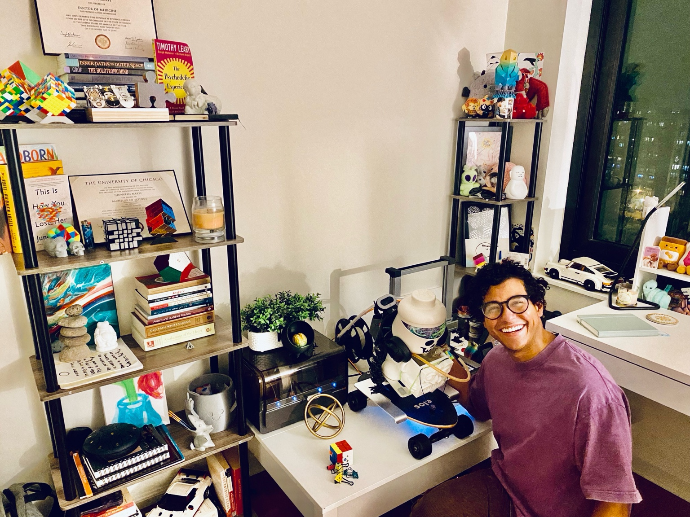

Psychiatrist | Innovator | Creator of The Mindfulness Buddy
Hello! I’m Jhonatan Marte, MD—a psychiatrist, innovator, and creative thinker. My passion is exploring the intersections of mental health, technology, and self-expression.
A 3D-printed tool blending play, mindfulness, and creativity.
A memoir exploring identity, mindfulness, and life's complexities through the metaphor of a Rubik’s Cube.